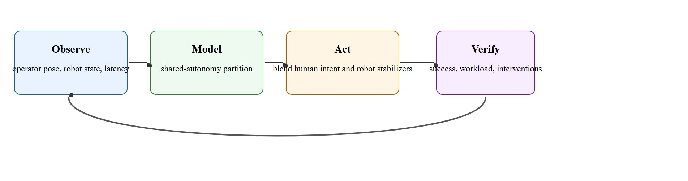

"Teleoperation is not a fallback. It is one of the fastest ways to reveal what the autonomy stack does not yet know how to do."
A Shared-Autonomy Design Review
This section assumes familiarity with whole-body control formulations from section 46.2 and with the shared-autonomy framing introduced alongside learning-from-demonstration in section 46.4. The data-collection pipeline built here feeds directly into the imitation learning workflows covered in section 23.3. The teleop traces and autonomy-partition ideas recur in section 46.6, where they underpin training humanoid foundation models at scale.
A researcher straps on a motion-capture suit, moves her arm, and a humanoid robot across the room mirrors every joint angle within 40 milliseconds, assembling a part no autonomous policy has yet learned to handle. That moment is not a workaround: it is the fastest known method for harvesting whole-body demonstrations rich enough to train the next generation of autonomous skills. Teleoperation sits at the critical junction between human dexterity and machine learning, and right now it is the primary bottleneck limiting how fast humanoid capabilities scale. This section shows you how to design low-latency operator interfaces, partition control authority between human intent and onboard stabilizers, and structure the data pipeline so every teleoperated trace becomes a reusable training asset.
A third of a second: that is roughly how stale the world already looks by the time an operator's command reaches a humanoid across a network, and it is exactly why you cannot puppeteer a robot's balance no matter how skilled you are. Teleoperation earns its place not by dodging that delay but by exposing it, because, as Figure 46.5A shows, the same link that builds data and validates interfaces also catches safety gaps long before fully autonomous deployment. A useful teleoperation latency budget is $T_{\mathrm{total}} = T_{\mathrm{sense}} + T_{\mathrm{encode}} + T_{\mathrm{network}} + T_{\mathrm{render}} + T_{\mathrm{human}} + T_{\mathrm{robot}}$. For high-bandwidth whole-body tasks, that sum shapes what can be directly operated and what must be handed to autonomous stabilizers or motion primitives.
Shared autonomy can be written as $u = \alpha u_{\mathrm{human}} + (1 - \alpha) u_{\mathrm{auto}}$, but the real system is richer. The human may command task intent while the robot closes local balance, collision, or grasp-stability loops. The best teleoperation interfaces expose this division clearly.
The partition matters physically because a humanoid's mechanical stability is governed by time constants far shorter than any human reaction loop. Letting $\alpha = 1$ (pure human control) over balance degrees of freedom at typical network delays causes falls; the physical robot cannot wait for a correction that arrives 250 ms late. Getting this wrong destroys hardware, creates safety hazards, and produces training data contaminated by recovery motions rather than skilled intent.
In practice, $\alpha$ is set per degree of freedom and per task phase rather than as a global scalar. Balance and contact joints hold $\alpha$ near zero at all times. Wrist and finger joints may run at $\alpha = 1$ during precision insertion. The weight can also be gated dynamically: if predicted contact force deviates beyond a threshold, the onboard controller temporarily overrides the human command for that joint only, then hands control back once stability is restored. That predicted contact force typically comes from the robot's own force or torque sensors at the wrist and fingertips, filtered forward a few control cycles by the same low-level controller that already runs the local balance and grasp loops, so the gating logic reuses infrastructure the robot needs anyway rather than adding a separate prediction model.
Think of a novice cook working with a head chef on a busy stove. The head chef (the onboard stabilizer) always controls the burner flame and the pot temperature, because those react in seconds and a mistake burns the dish irreversibly. The novice (the human operator) handles seasoning and plating, tasks that tolerate a slower feedback loop. If the novice reaches for the flame dial during a critical reduction, the head chef gently moves their hand away, adjusts the heat, then returns the dial. Neither person controls everything; each controls the knobs whose time scale matches their reaction speed. The partition shifts, too: once the reduction is stable, the head chef steps back and the novice can stir freely. That is exactly how per-degree-of-freedom alpha works across a humanoid's joints.
Poor teleoperation is often a systems-design failure, not an operator failure. The operator can only be as good as the latency, viewpoint, and autonomy partition allow.

Figure 46.5.1 lays out the full loop: observe operator and robot state, model the shared-autonomy partition, act by blending human intent with onboard stabilizers, and verify success alongside workload and interventions. Teleoperation is a productive first-class research layer because it solves three problems at once: it provides coverage for hard tasks, a direct debugging path for failed autonomy, and a data stream for imitation or behavior modeling.
Humanoid teleoperation is especially demanding because whole-body motion, balance, and manipulation are tightly coupled. A human operator may specify intent, but the local stabilizer still has to protect contact feasibility and safety zones. The gap in practice is stark. A humanoid balancing loop needs a response within 20 ms to stay stable. A typical teleop round-trip runs 250-300 ms, more than ten times too slow for direct balance control. Balancing a humanoid over a 300 ms teleop link is like catching a falling glass while wearing oven mitts and looking through a window that shows the room as it was a third of a second ago. That mismatch is why essentially every deployed humanoid teleop stack we are aware of offloads balance and contact stabilization to onboard autonomy by design, not as a convenience.
Evaluation should therefore track not only task success but also operator workload, intervention frequency, takeover time (the delay between an autonomy failure and the operator regaining effective control of the affected joints), packet delay, and the fraction of control handled autonomously.
So far: teleoperation combines a hard physical constraint (balance reacts in tens of milliseconds, but a teleop link typically adds hundreds), a design response (the human-robot control split, or autonomy partition), and an evaluation practice (tracking workload and intervention metrics alongside task success). The next paragraph looks at how three real deployments draw that partition in practice.
Real deployments illustrate how different teams draw the autonomy boundary. The 1X NEO system uses expert-mode supervision, a form of supervisory teleoperation in which an operator issues high-level task commands rather than direct joint commands. Operators command high-level actions while the robot closes local balance and contact loops at full servo rate. This keeps end-to-end human latency out of the stability-critical path. NVIDIA GR00T Whole-Body Control reports a similar split. The teleop interface sends Cartesian hand targets (the desired hand position and orientation in 3D space, rather than a target angle for each individual joint) while an onboard whole-body controller solves for joint trajectories and footstep feasibility in real time. Stanford HumanPlus (Fu et al. 2024) retargets full-body motion-capture pose to the robot at roughly 50 Hz. The robot's built-in balance stabilizer absorbs pose tracking error, so the operator never commands it explicitly.
When recording teleop sessions with the LeRobot library, call dataset.save_episode() explicitly before every e-stop or planned pause. LeRobot buffers frames in memory and flushes lazily, so a session that ends on an emergency stop (e-stop) or network drop silently discards the most recent buffer without error. Set the fps argument on LeRobotDataset to match your control loop rate (commonly 50 Hz for whole-body humanoid tasks) rather than leaving it at the default 30 Hz; a mismatch causes timestamp drift that corrupts action-chunking baselines built on top of the dataset, where action chunking is the practice of predicting several future actions in one forward pass rather than one action at a time.
To see how the latency budget and autonomy fraction turn into an actual design call, it helps to run the numbers on a single session. A small teleop run summary can reveal whether failure came from latency, viewpoint, or missing autonomy support rather than from human skill.
latency_ms = {"sense": 18, "encode": 8, "network": 42, "render": 25, "human": 180, "robot": 14}
total = sum(latency_ms.values())
autonomy_fraction = 0.62
print({"total_latency_ms": total, "autonomy_fraction": autonomy_fraction})
print({"direct_teleop_ok_for_fast_balance": total < 120})Expected output interpretation. At 287 ms end-to-end latency, direct whole-body balance control is unrealistic. The operator can still command intent, but stabilization must be handled by local autonomy or motion primitives.
Trace the partition decision with concrete numbers. Suppose a session measures, in milliseconds, $T_{\mathrm{sense}}=18$, $T_{\mathrm{encode}}=8$, $T_{\mathrm{network}}=42$, $T_{\mathrm{render}}=25$, $T_{\mathrm{human}}=180$, $T_{\mathrm{robot}}=14$. Step 1: sum them, $T_{\mathrm{total}}=18+8+42+25+180+14=287$ ms. Step 2: compare against each loop's mechanical time constant. Balance time constant is roughly 150 ms, and $287 > 80$ ms (the direct-control threshold), so balance joints get $\alpha=0$. Step 3: grasp stabilization tolerates up to 150 ms; since $287 > 150$, finger contact joints also get $\alpha=0$ during force-sensitive phases. Step 4: high-level sequencing tolerates 500 ms; since $287 < 500$, intent commands stay at $\alpha=1$. Step 5: read off the result. The wrist may run $\alpha=1$ during a precision-insertion phase where contact force stays under the deviation threshold, but the moment predicted force exceeds it, the onboard controller drives that one joint to $\alpha=0$, then hands it back. Final partition for this 287 ms link: balance and contact at $\alpha=0$, wrist conditionally at $\alpha=1$, task intent at $\alpha=1$.
For the input channel, the Apple Vision Pro stack used by Stanford's Open-TeleVision (Cheng et al. 2024) streams stereo video to the operator and retargets hand pose over WebRTC (a low-latency peer-to-peer streaming protocol built for real-time audio and video), while a Meta Quest 3 plus a controller-based IK retargeter (inverse-kinematics software that converts a tracked hand or controller pose into joint angles for the robot arm, as in many Unitree G1 setups) is the cheaper alternative. On the robot, route commands over ROS 2 with a real-time-safe DDS profile (DDS, or Data Distribution Service, is the publish-subscribe messaging middleware ROS 2 uses to move messages between nodes; Cyclone DDS configured for the SCHED_FIFO control thread, a Linux kernel scheduling policy that guarantees the control loop is not preempted by lower-priority processes) so the onboard whole-body controller, like the one shipped in NVIDIA GR00T Whole-Body Control, keeps servoing at full rate even when operator packets stall. Capture every session with LeRobot's LeRobotDataset so the operator intent stream, synchronized robot state, and head-camera video land on one timeline rather than as a disposable screen recording.
The partition should move more control to the robot side whenever end-to-end latency exceeds the mechanical time constant of the loop in question. Balance on a humanoid has a time constant on the order of 100-200 ms (the inverted-pendulum dynamics of a 1-metre centre-of-mass height); direct human balance control is therefore impossible above roughly 80-100 ms round-trip delay. Grasp stabilization tolerates slightly more latency because contact forces change more slowly than whole-body sway. High-level task sequencing (pick this box, move to that shelf) can tolerate 500 ms or more. In practice: push balance and collision avoidance to the robot at any network delay above 80 ms, push grasp stabilization at delays above 150 ms, and keep intent commands under human control at any latency the session allows.
A common misconception is that teleoperation means the human operator directly controls every joint of the humanoid, including balance, just as a puppeteer controls every limb of a puppet. This is wrong in the embodied AI context because a humanoid's balance dynamics operate on time constants of 100-200 ms, far shorter than the 250-300 ms round-trip latency of any realistic teleop link. Giving the operator direct authority over balance degrees of freedom does not result in human-in-the-loop balance; in practice it typically results in falls, hardware damage, and corrupted training data, because the physical stabilization loop simply cannot wait for a network round-trip. The correct mental model is that the operator commands task intent (where to move a hand, which object to pick) while the onboard stabilizer owns balance and contact joints as a rule, largely independent of operator skill, since the constraint is the network delay rather than human reaction time.
A teleoperation system can look smooth in short videos while silently overloading the operator or depending on unlogged manual corrections.
For whole-body box carry, the operator may choose waypoint and hand intent while the robot handles foot placement and balance. For delicate insertion, autonomy may step back and the operator may take finer hand control.
The 1X NEO program runs teleoperation as a production data pipeline: human operators in expert mode command high-level task intent while the robot's onboard controller owns balance and contact loops at full servo rate, keeping the 250-plus ms human latency out of the stability path. Every supervised session in a real home becomes a labeled demonstration that trains the next autonomous policy, so operator interventions directly mark the frontier where current autonomy still fails. This is the autonomy-partition design of this section deployed commercially at scale rather than in a lab.
Teleoperation teaches the autonomy stack where the robot still needs a grown-up in the room.
Three active frontiers are reshaping humanoid teleoperation as of 2024-2026. First, scalable whole-body retargeting pipelines: Stanford (HumanPlus, Fu et al. 2024) and Carnegie Mellon (ExBody2, Ji et al. 2024) combine upper-body motion-capture retargeting with learned lower-body stabilization. A single operator session then yields transferable demonstrations across morphologically different platforms, cutting per-platform data cost by an order of magnitude versus robot-specific rigs. Second, latency-robust shared autonomy through learned intent prediction: systems such as ALOHA 2 (Zhao et al. 2024) and Fourier GR-1 infer operator intent from partial command streams and pre-execute likely continuations. The onboard policy acts on a predicted future rather than waiting for a stale command, decoupling task-level latency from the physical control loop. Third, teleoperation as curriculum for foundation models: NVIDIA Isaac Lab and the Dextreme line of work (Handa et al. 2023-2024) treat large-scale teleoperated traces as a curriculum scaffold. Human corrections identify the boundary of current policy competence; the system then triggers additional data collection only for those failure modes, compressing total teleop hours to reach a deployment threshold. Open problem for PhD research: no principled method yet exists for dynamically allocating operator attention across multiple robots or task streams during concurrent teleoperation. Companies including 1X and Figure AI already operate in this setting commercially, but the cognitive-workload theory, autonomy-partition formalism, and evaluation benchmarks remain underdeveloped.
Which part of a humanoid task would you keep under local autonomy first when network delay rises: balance, collision avoidance, grasp stabilization, or high-level sequencing?
Once the partition, tooling, and deployment patterns above are in place, the payoff is a shift in how you think about the whole activity. The key reframe is to treat teleoperation as instrumentation rather than as failure. The best teams mine teleop traces for control bottlenecks, perception blind spots, and policy interface mistakes.
Teleoperation quality also sets a ceiling on data scaling: it governs not just task success in the moment but the fidelity of every demonstration that later trains an autonomous policy.
| Tool or Library | Role in the Topic | Builder Advice |
|---|---|---|
| ROS 2 | Transport and synchronized logging | Record human intent and robot correction on the same timeline. |
| VR or motion-capture interfaces | Human input channel | Choose interfaces that match the required control granularity. |
| Dataset tooling | Turn teleop into training data | Never leave a useful teleop session as an unlabeled video only. |
This section supports teleoperation and data collection and humanoid foundation models.
Instrument one teleop task with a latency budget and autonomy split. Record where the operator helped and where autonomy already carried the load.
Teleop failures should be labeled by latency, viewpoint, operator overload, shared-autonomy mismatch, or low-level robot instability. Only one of those is fixed by training the operator harder.
LeRobot documentation. https://huggingface.co/docs/lerobot/en/index
Practical tooling for robot demonstration data.
1X NEO official page. https://www.1x.tech/neo
Current official example of expert-mode supervision in a humanoid stack.
GR00T Whole-Body Control documentation. https://nvlabs.github.io/GR00T-WholeBodyControl/
Current whole-body control reference relevant to local stabilizers in teleop stacks.
Humanoid teleoperation is valuable because it reveals where human intent ends and robot stabilization must begin.
Choose a humanoid task and define the autonomy partition you would use at 80 ms latency and at 300 ms latency. Explain which loops move to the robot side and why.
Beginner (weekend): Latency budget visualizer with simulated teleop in MuJoCo. Build a Python script that instantiates a simple MuJoCo humanoid (the humanoid.xml model included with MuJoCo), injects configurable artificial delays at each stage of the latency budget formula, and plots how balance success rate degrades as total round-trip delay crosses 100 ms, 200 ms, and 300 ms thresholds. The key challenge is decoupling the simulated network delay from the physics step so the controller still runs at full rate while the operator command stream is artificially stalled. Intermediate (1-2 weeks): Shared-autonomy teleop data collector using LeRobot and a ROS 2 keyboard or gamepad interface. Wire a ROS 2 publisher that streams per-joint alpha values alongside human intent commands to a simulated robot in Isaac Lab, record every episode with LeRobot's LeRobotDataset API at 50 Hz, and compare the downstream imitation-learning success of traces collected at alpha=0.3 versus alpha=0.7 for a box-carry task. The key challenge is keeping the intent channel and the autonomy-override channel on perfectly synchronized timestamps so that action-chunking baselines built from the dataset do not suffer from the timestamp drift described in the LeRobot tip above.